Guild Bulwark
Choose the shield-bearer to animate.
New stills
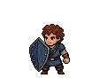
H02 Blue Diamond
A copper-haired recruit holds a peaked, riveted blue shield.
PNG · LibreSprite
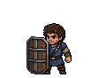
H07 Banded Oak
A curly-haired road guard braces behind an iron-strapped oak pavise.
PNG · LibreSprite
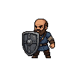
H09 Cross-braced Steel
A bald veteran with a full beard carries a steel shield with a raised cross brace.
PNG · LibreSprite
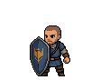
H14 Guild Kite
A close-cropped guard wears the gold Guild crest on a long blue kite shield.
PNG · LibreSprite
Human references sent to PixelLab
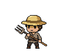
Farmer
58 px tall
Pan Villager
57 px tall
Guild Swordsman
58 px tall
Guild Ranger
57 px tallBrowse the other 12 shield-bearers
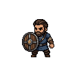
H01 Bossed Oak
A dark-haired escort carries a round oak shield with a raised central boss.
PNG · LibreSprite
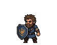
H03 Gilt Crest
A tousled, bearded guard carries the ochre Guild device on blue.
PNG · LibreSprite
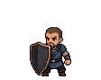
H04 Black Hide
A close-cropped guard carries a black shield with a warm leather rim.
PNG · LibreSprite
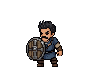
H05 Ironbound Round
A swept-haired guard carries a round shield with an iron cross brace.
PNG · LibreSprite
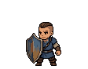
H06 Split Field
A young guard carries a tall kite shield divided into two fields.
PNG · LibreSprite
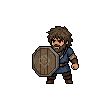
H08 Carved Octagon
A shaggy-haired guard carries an eight-sided carved wooden shield.
PNG · LibreSprite
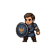
H10 Blue Roundel
A clean-shaven guard carries a blue round shield with a gold device.
PNG · LibreSprite
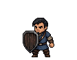
H11 Pointed Oak
A black-haired guard carries a pointed shield of dark wooden planks.
PNG · LibreSprite
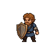
H12 Gilt Rim
A red-bearded guard carries a tapered brown shield with a gold rim.
PNG · LibreSprite
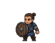
H13 Oak Roundshield
A guard with a topknot carries a round oak shield with an iron boss.
PNG · LibreSprite
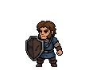
H15 Dark Heater
A broad-shouldered guard carries a dark heater shield.
PNG · LibreSprite
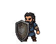
H16 Ashen Crest
A long-haired veteran shelters behind a broad shield with a pale crest.
PNG · LibreSprite